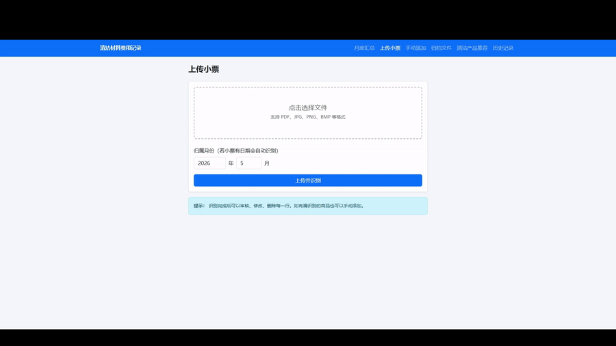
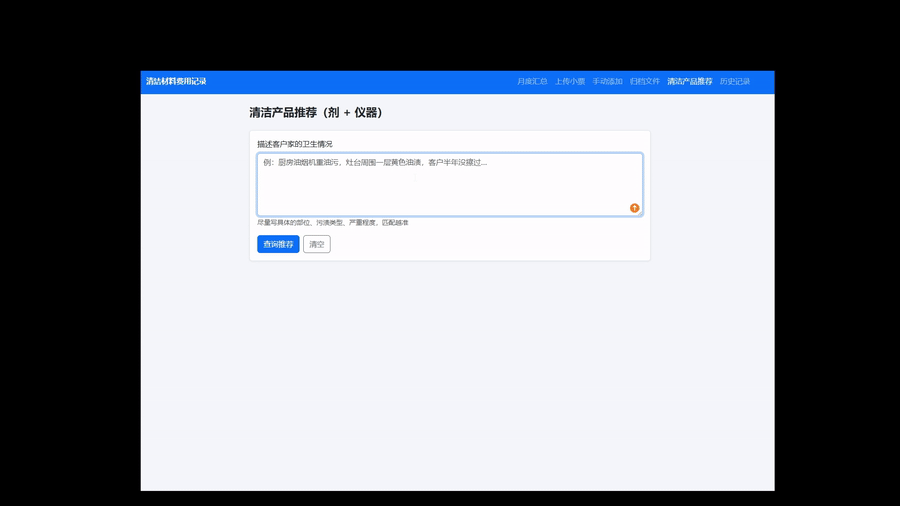

01 · The Problem
Running a cleaning service from a notebook stops scaling fast
I shop in three languages, juggle receipts in a drawer, and answer "which product for this job?" from memory. The business runs, but the operations are invisible to me.
-
Receipt entry is the friction
Typing every line of a German receipt by hand is the reason I stopped tracking expenses three times.
-
No visibility into spend
Without categories, I can't tell if I'm overspending on tools vs. consumables, or which months drained the budget.
-
Product knowledge stuck in my head
"Mold in the bathroom, what do I bring?" I know the answer; nothing in my workflow captures it as a system.
"Make the boring back-office work fast enough that I'll actually do it, and turn what's in my head into a tool I can query."
02 · Product in Action
See the two flows that matter
Receipt → categorized rows in seconds. A free-form description → ranked products and instruments with matched terms.


03 · Features
What was built, and why
Upload a photo or PDF. Tesseract extracts items, prices, and dates from German, English, and Chinese receipts. Originals are auto-archived to receipts/{year}/{month}.
The bottleneck wasn't analysis, it was data entry. Removing typing kills the resistance to actually tracking.
12 categories tuned to my real purchasing patterns, with keyword rules covering Chinese, English, and German product names plus brand variants and OCR fragments.
Generic categories produce dead taxonomy. Categories built from my own receipt history match the questions I'd actually ask the data.
Describe the dirty situation in your own words — "厨房瓷砖油渍重，卫生间水垢多". The system ranks both consumable products and electric instruments by keyword match (primary 2x, extended 1x), prioritizes instruments on ties, and shows every matched term so I can see why a result surfaced.
My product knowledge becomes a queryable asset. Explicit weights beat vibes when I have to defend a recommendation to a client.
Items grouped by category, per-month totals, side-by-side comparison across months. Inline recategorize and delete.
A side business doesn't need accounting software, it needs visibility. One screen answers "where did the money go this month?"
04 · Key Decisions
Trade-offs I made on purpose
Receipts hold financial and address data. Running locally avoids the privacy and cost surface of cloud OCR for a single-user tool. German accuracy is good enough with the right preprocessing.
With under 50 products, ML overhead isn't justified. Keyword rules in one JSON file are debuggable, editable on the fly, and the scoring logic is something I can explain to a client.
05 · If This Were a Real Product
What I'd measure
The tool only matters if I keep using it and the business runs better because of it.
Manual baseline vs. OCR-assisted. Target: 80% reduction.
% of real shopping trips that end up in the tracker. Below 90% means data is lying.
When the tool suggests a cleaner, do I bring it? Tracks whether the system reflects my real judgment.
Month-over-month category share. Surfaces overspend before the bank statement does.
06 · Tech Stack
Boring stack, fast iteration
Picked tools I could ship in a weekend and maintain alone.